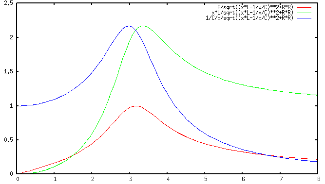

The physical meaning of the quality factor  of an RCL series circuit is
the ratio between the energy stored in the circuit (in
of an RCL series circuit is
the ratio between the energy stored in the circuit (in  and
and  ) and the
energy dissipated (by
) and the
energy dissipated (by  ):
):


The energy dissipated in  per cycle
per cycle
 is:
is:

Relationship between  and
and 
If the voltage across  is treated as the output of the circuit, then
the frequency response function (FRF) of this second order system can be
expressed as (voltage divider):
is treated as the output of the circuit, then
the frequency response function (FRF) of this second order system can be
expressed as (voltage divider):


| under damped | ||
| critically damped | ||
| over damped |
Peak Frequency and Bandwidth
The frequency response function above can be further expressed as:
![\begin{displaymath}H_R(\omega)=\frac{R}{R+j(\omega L-1/\omega C)}
=\left[1+j\left(\frac{\omega L}{R}-\frac{1}{\omega CR}\right)\right]^{-1} \end{displaymath}](img609.png)
![\begin{displaymath}H_R(\omega)=\left[1+jQ\left(\frac{\omega}{\omega_0}-\frac{\omega_0}{\omega}\right)\right]^{-1} \end{displaymath}](img612.png)

![\begin{displaymath}\omega_{1,2}=\omega_0\left[\sqrt{1+\left(\frac{1}{2Q}\right)^...
...}{2Q}\right]
=\omega_0\left(\sqrt{1+\zeta^2}\mp \zeta\right)
\end{displaymath}](img622.png)


If  is much greater than 1 (typically
is much greater than 1 (typically  , i.e.,
, i.e.,  ),
we have
),
we have
 and
and


For a parallel RCL circuit with current input, due to the duality between current and voltage, parallel and series configuration, the same derivation of bandwidth can be carried out to obtain the same conclusions.
Summary:



See this website for more detailed discussions of second-order systems.
Example 1:
A series RCL circuit composed of an inductor  and
and  and a capacitor
and a capacitor  is connected to a voltage source. Find the value of
is connected to a voltage source. Find the value of
 for this circuit to resonate at
for this circuit to resonate at  , also find the bandwidth.
, also find the bandwidth.


Example 2:
Resonant circuit is widely used in radio and TV receivers to select a
desired station from many stations available. The circuit are shown in
the figure below. Assume  ,
,  , and
, and  is a variable
capacitor, which can be adjusted to match the resonant frequency of the
circuit to the frequency of the desired station. Assume the frequency
of the desired station is
is a variable
capacitor, which can be adjusted to match the resonant frequency of the
circuit to the frequency of the desired station. Assume the frequency
of the desired station is  , find the value of
, find the value of  and the
bandwidth of the tuning circuit. Moreover, if the induced voltage in
the circuit is
and the
bandwidth of the tuning circuit. Moreover, if the induced voltage in
the circuit is  (rms), find the current (rms) in the resonant
circuit, and the output voltage (rms) across the capacitor.
(rms), find the current (rms) in the resonant
circuit, and the output voltage (rms) across the capacitor.

Solution: At the desired resonant frequency  , the
reactance of the inductor is
, the
reactance of the inductor is


Radio/TV Broadcasting and Frequency Allocation
In either radio or TV broadcasting, the audio or video signal is used to
modulate the amplitude, frequency or phase of the carrier frequency,
which is transmitted through the air. In amplitude modulation (AM) radio
broadcasting, if the highest frequency component contained in the audio signal
is
 , and the carrier is
, and the carrier is
 , where
the carrier frequency is much higher than the signal frequency,
, where
the carrier frequency is much higher than the signal frequency,
 , then the signal transmitted is the carrier signal
, then the signal transmitted is the carrier signal  with its
amplitude modulated by the signal
with its
amplitude modulated by the signal  :
:
The AM radio frequency range is from 535 to 1605 kHz with 10 kHz frequency spacing or bandwidth, i.e., the highest signal frequency allowed is about 5 kHz, while the upper limit of the audible frequencies is 20 kHz. In the case of FM radio, the frequency range is from 87.8 to 108 MHz with 0.2 MHz=200 kHz frequency spacing, corresponding to a much wider bandwidth that makes high fidelity and stereo broadcasting possible. The TV broadcasting is also in MHz frequency range with a much wider spacing of 6 MHz, needed to carry video as well as audio signals.
The Federal Communications Commission (FCC) has very specific frequency allocation regulations, see the FCC frequency allocations and the frequency allocation chart.
Example 3:
In reality, all inductors have a non-zero resistance, therefore a parallel resonance circuit should be modeled as shown in the figure.

The admittance is:
![\begin{displaymath}Y(\omega)=\frac{1}{R+j\omega L}+j\omega C
=\frac{R-j\omega L...
...c{1}{R^2+\omega^2L^2}[R-j(\omega L-\omega C(R^2+\omega^2L^2))]
\end{displaymath}](img672.png)


 , and the resonant frequency is
, and the resonant frequency is

Note: For the same reason, when considering the transfer function
of a series RCL circuit when the output is the voltage across either  or
or  , the peak frequency
, the peak frequency  is not exactly the same as the
resonant frequency
is not exactly the same as the
resonant frequency  , which only minimizes the denominator, but
the numerator is still a function of
, which only minimizes the denominator, but
the numerator is still a function of  . Only when the output is
the voltage across
. Only when the output is
the voltage across  (i.e., the numerator is
(i.e., the numerator is  , no longer a function
of
, no longer a function
of  ), will the resonant frequency
), will the resonant frequency  be the same as the
peak frequency.
be the same as the
peak frequency.
Example: Consider the output voltage  across the resistor
R of the circuit shown below.
across the resistor
R of the circuit shown below.